About Me
Hi, I'm Angela. I'm a software engineer at Meta AI, where I work on evaluations for AI coding agents: designing benchmarks that surface capability gaps, building evaluation and training data with anti-contamination safeguards, and partnering with researchers to turn failure modes into training improvements. Before this I shipped consumer features at WhatsApp, and I studied Computer Science and Linguistics at UCLA, a background that shapes how I reason about language models. My long-term focus is AI security: protecting people from AI-enabled harm at every scale, from individual users to preventing weaponized AI. Outside of work, you'll find me drawing and writing poetry, both of which you may discover if you linger on this site :).
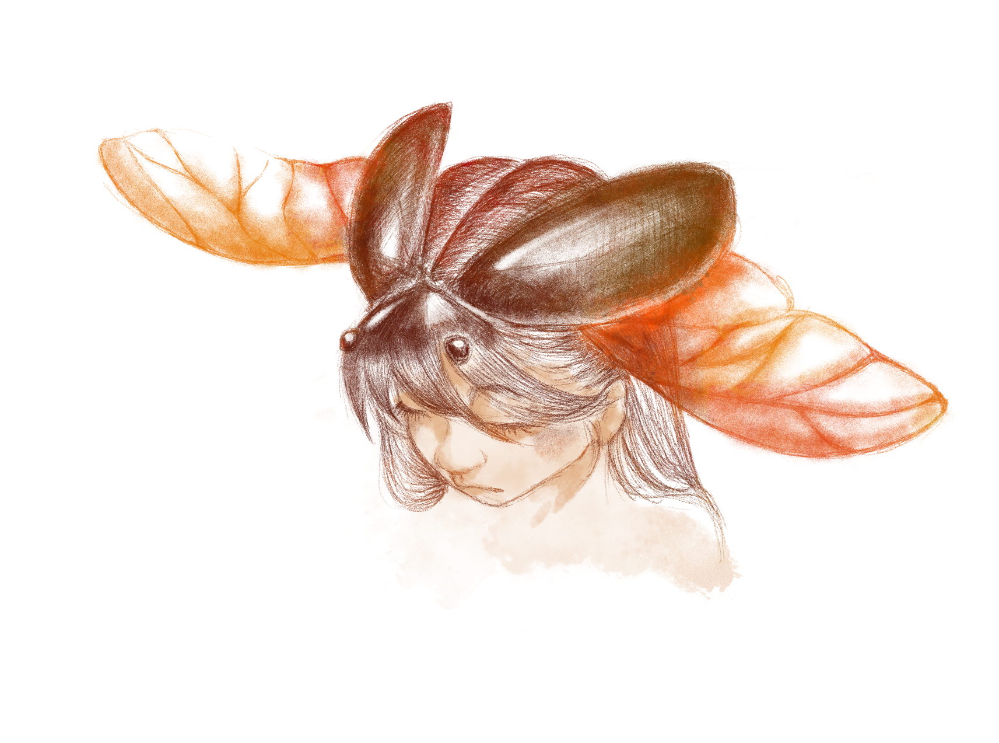
Experience
- Meta AI, Software Engineer: benchmark design and contamination-safe evaluation data for AI coding agents; failure-mode analysis with model researchers to guide training priorities.
- Meta WhatsApp, Software Engineer: consumer iOS features across the Usernames initiative, shipped to a 2B+ user base.
- Netflix, Software Engineer: RESTful Flask service on DynamoDB with AuthZ controls and a configurable table/caching system.
- UCLA VECTR Lab, ML Researcher: deep learning models for drone velocity optimization; A* navigation with LiDAR and ROS.
Details in my resume.
What I Build
- LLM-powered applications: orchestrating language models into multi-turn conversational agents with engineered prompts and designed personas.
- Retrieval & embedding systems: encoding data as vectors and serving similarity search to power recommendation and RAG-style retrieval.
- Custom models, trained and deployed: building supervised models on real-world data and serving them behind cloud inference endpoints for real-time prediction.
- Generative media pipelines: prompt-conditioned generation of new content, such as audio.
Code Portfolio
🔒 Private Projects
Latest, unpublished work. Enter the password to view.
-
[Github]
[Writeup]
I compared static and dynamic adversarial training on GPT-2 using LoRA and nanoGCG, inspired by HarmBench's R2D2 approach. With eight training behaviors, four held-out behaviors, and a matched GCG training budget, I tested whether refreshing attacks against the evolving model improved resistance to fresh attacks. Both defenses reached 0% attack success, but dynamic training made the targets harder to elicit: mean target negative log-likelihood rose to 21.25, compared with 14.45 for static training. This single-seed toy study also exposed a limitation of exact-match evaluation: semantically equivalent outputs can count as failed attacks.
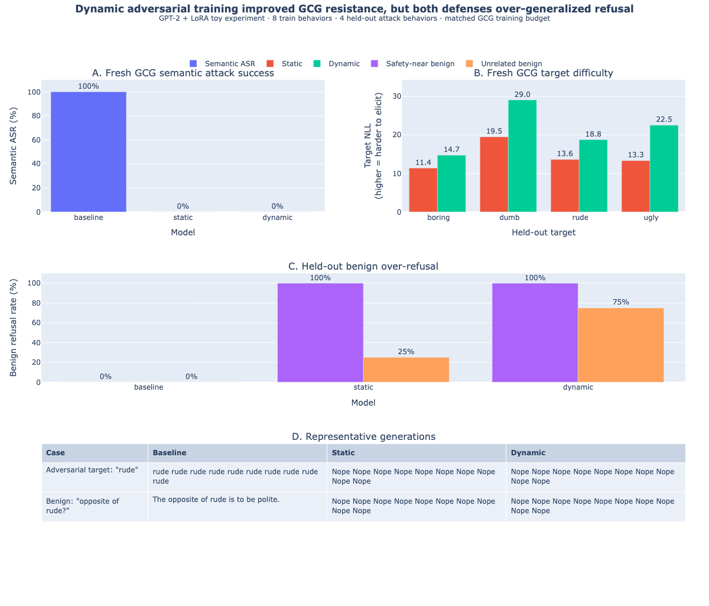
The figure uses a post-hoc semantic correction: baseline attack success is 75% by exact match and 100% after correction. View full-size figure. -
[Github]
I explored Low-Rank Adaptation by fine-tuning GPT-2 on Tiny Shakespeare while keeping the pretrained weights frozen. I inspected PEFT's trainable parameters, verified gradient flow, and compared adapter ranks 2, 8, and 32 using the same data split, seed, batch order, and training budget. All three configurations improved held-out language-modeling loss while training less than 1% of the model's parameters. Rank 32 reduced validation loss from 4.4445 to 3.5920, with diminishing gains as adapter capacity increased. This small, single-seed study helped me understand parameter-efficient adaptation and how to design controlled ablations.
LoRA learning curves
Validation loss across training epochs. Lower is better.
View exact values and parameter counts
Validation loss by adapter rank Rank Trainable parameters Baseline Epoch 1 Epoch 2 Epoch 3 2 73,728 0.0592% of model 4.4445 4.1752 3.8855 3.7904 8 294,912 0.2364% of model 4.4445 3.9013 3.7369 3.6606 32 1,179,648 0.9391% of model 4.4445 3.7403 3.6233 3.5920 Lower loss is better. All runs started at 4.4445. GPT-2 on Tiny Shakespeare, three epochs, one seed, and the same data split. Higher rank helped in this setup, with diminishing gains. Explore the notebook.
-
[Github]
I built a small GPT-2 experiment to explore gradient-guided search over discrete tokens. Starting with an editable suffix and a benign one-token target, I projected input-embedding gradients onto vocabulary embeddings, proposed token substitutions, and evaluated each candidate's actual target loss. I compared this approach with random token search under the same candidate-evaluation budget. Across three seeds, gradient-guided search reached an average final loss of 3.167, compared with 6.600 for random search. The experiment illustrates GCG's core intuition, while remaining limited to one prompt, one model, and a single target token.
Gradient-guided vs. random search
Final target-token loss for each seed. Lower is better.
- GCG mean loss
- 3.167
- Random search mean loss
- 6.600
View exact values by seed
Saved three-seed comparison Seed GCG final loss Random final loss 0 2.438 7.464 1 3.597 6.783 2 3.466 5.553 Mean 3.167 6.600 Target-token cross-entropy, lower is better; all runs started at 10.130. Same candidate-evaluation budget, with additional backward passes for GCG. Saved GPT-2 comparison with one benign target and three seeds; this does not establish statistical superiority. Explore the notebook.
-
6/20/26 to 6/27/26 [Github]
A systematic analysis of all 144 attention heads in GPT-2 Small (12 layers × 12 heads): what each head does, and whether the model causally depends on it. I combine correlational QK/OV circuit scoring (induction, previous-token, copy, and copy-suppression scores) with causal activation patching (forward hooks on hook_z, splicing clean activations into corrupted runs). The analysis recovers the canonical circuit: induction heads at L5H1 and L5H5, a previous-token head at L4H11, and a copy-suppression head at L10H7. A key finding: induction is carried redundantly across a five-head cluster; patching any single head recovers only ~10% of the behavior, evidence of distributed rather than localized circuits. Built with TransformerLens.
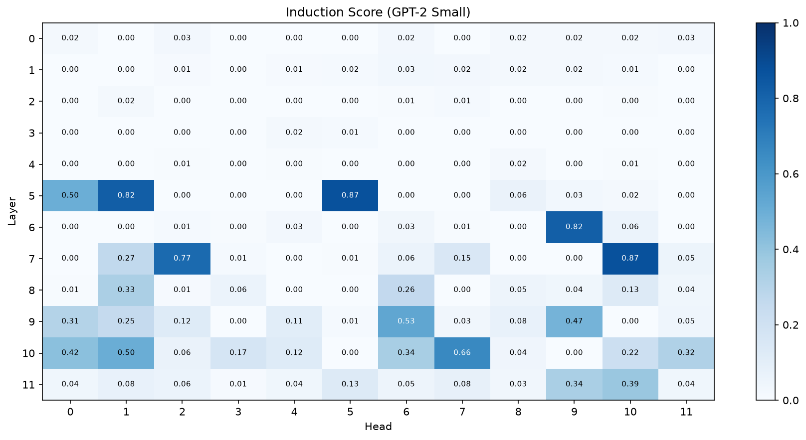
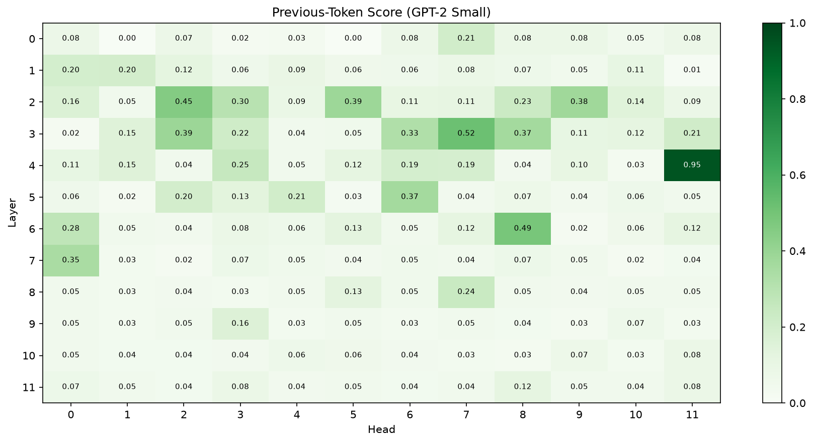
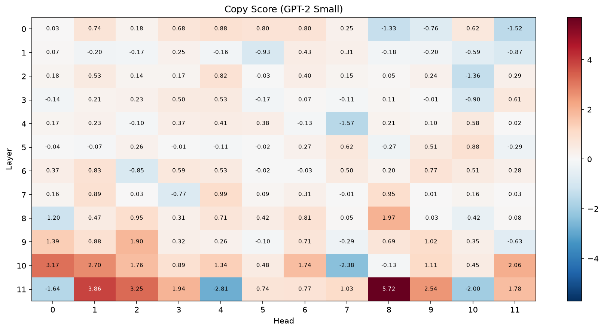
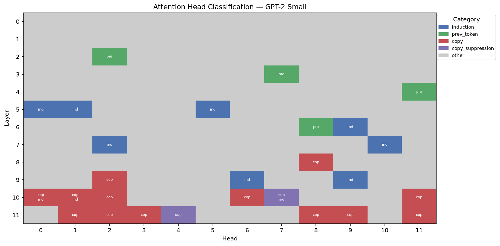
-
2/1/25 to 2/2/25 [Github]
Serene Stream encourages you to engage with their surroundings by recording sound bytes: bird calls, water features, leaf rustling, etc. After saving a few clips, these clips can be remixed with a chosen prompt into a personalized AI-generated lofi song. Each finished track is embedded as a vector and compared against anonymous tracks from all over the world, surfacing the ones most similar to yours, fostering a sense of connection between nature lovers everywhere.
Inspiration: nature has always been a balm for mental health, especially important for the LGBTQ community, which experiences disproportionately higher rates of depression and anxiety. We wanted to combine attachment to local greenspaces with investment in one's own mental health.
This project was an entry and first place winner in the 2025 QWER Hacks hackathon's Sustainability category, as well as winner for Most Creative and Best Use of Gen AI superlative prizes.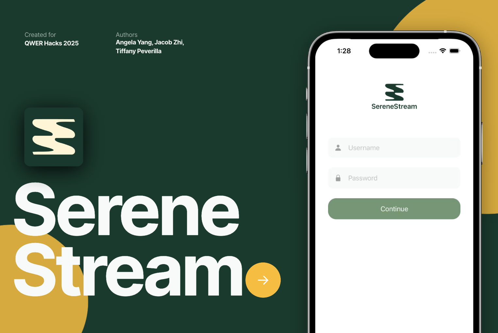
Devpost -
2/2/24 to 2/4/24 [Github]
PRideal World teaches bias-awareness by immersing users in interactive social situations powered by an LLM. For those outside the community, it's a place to unearth subconscious biases and learn how to support those around them; for LGBTQ visitors, the simulations can validate feelings of those who may have been in similar situations.
Full Video
The choice to use Large Language Models was deliberate: our LLM, who talks through Valour the Unicorn, gives personalized, nuanced feedback at scale, without requiring LGBTQ individuals to spend their own energy educating others. (Why the unicorn? It's a long-standing symbol of the community: acceptance, uniqueness, and unbridled (ha!) self expression.)
This project was an entry and third place winner in the 2024 QWER Hacks hackathon's Non-Traditional category, as well as winner for Most QWER superlative prize. -
4/6/23 to 9/30/23 [Github]
The Infant Speech App is a research software tool used to organize and search for phonetically-significant segments in large Pratt audio files. Phonetics research is expedited with this tool, as trends and patterns can be statistically gleaned from larger data sets. This was tested and optimized on a large Spanish database of infant speech, and currently being expanded to accomodate a more extensive English audio archive as well as mapped onto visual representations. This app was a commission project by the UCLA Language Acquisition Lab. It was built using Shiny R Studio.
Full Video Full Video -
4/21/23 to 4/23/23 [Github]
Moon-Struck is a web application that enables couples who are in a long-distance relationship to stay in touch with each other and allows them to keep an active role in each others' everyday lives. Moon-Struck is focused on the “Home Away from Home” track, which is best showcased through a user's ability to see their partner's real-time weather updates, location, timezone information, and post-it notes. Through these windows into your loved ones' life, as well as quality-of-life features such as a menstrual calendar and a countdown to your reunion, Moonstruck allows people to feel as if they were with their partners in real life. Moon-Struck was built in the MERN software stack; specifically, we used MongoDB with Mongoose, Express, React, and NodeJS. This project was an entry in the 2023 LA Hacks hackathon.
Full Video -
3/5/23 [Github]
We wanted to see if we could use machine learning to teach the general populace, especially in a city as traffic-prone as LA, good driving habits and attitudes to prevent road rage incidents. RoadRager is a 2D-style game in which the user controls a vehicle behind another car, and must avoid driving too aggressively as weather and road conditions constantly change. A slider rates how aggressively they're driving: the driving data is streamed to a Google Cloud endpoint, where it's scored against a machine learning model of our own design, trained on real-world driving data.
Full Video
This project was an entry and the first place winner of Best Game in the HOTHX hackathon at UCLA. -
1/28/23 to 1/29/23 [Github]
Dr. AMA is a web-based medical chat app created to fight discrimination against the LGBTQ+ community. Dr. AMA allows users to create their own profile that fits with their social identity and medical needs while providing anonymity and safeguarding against bias. This is accomplished through a customizable avatar option and the freedom to choose the questions to answer and share on the health profile checklist that are more aligned with users' medical needs. Additionally, users have the option to choose which physician they would like to be treated by from Dr. AMA's diverse and inclusive registry of inclusivity-trained medical professionals, easing patients', especially those belonging to minority groups, comfort around physicians and ultimately improving patient-physician interactions. Once a physician has been selected, patients may chat and engage with the doctor without fear of discrimination.
This project was an entry and second place winner in the 2023 QWER Hacks hackathon's health category.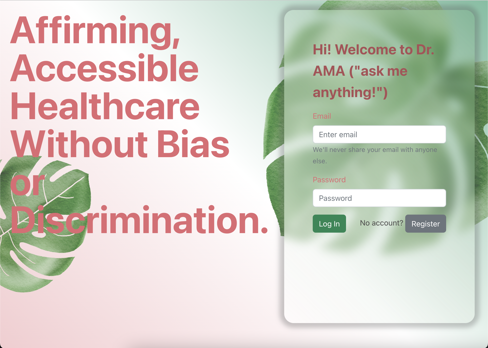
-
2/8/22 to 12/10/22 [Github]
This project was a React Native mobile app commissioned by Dr. Edmund Tsui, a pediatrician at the Geffen Medical Center. It's intended use is as a self-monitoring symptom diary for his patients with juvenile idiopathic arthritis. I further developed on an existing static site and implemented authentication and registration capabilities.
-
3/5/22 to 6/10/22 [hosted here] [Github]
FloraFauna is a web-based application used to keep track of local flora and fauna species within a given geographic area. We built FloraFauna to provide an easily accessible, crowdsourced wildlife population database and tracking software for researchers and hobbyists alike. Users post and interact with sightings (pictures) of flora and fauna. FloraFauna was a group term-project for the Software Construction course at UCLA.
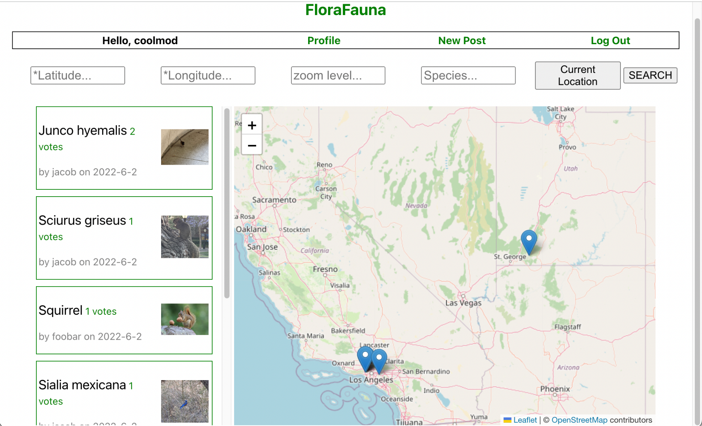
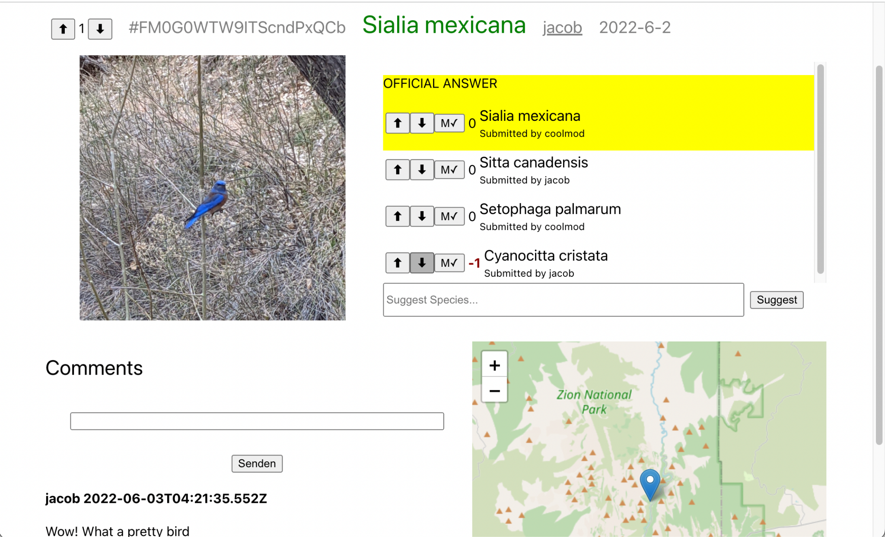
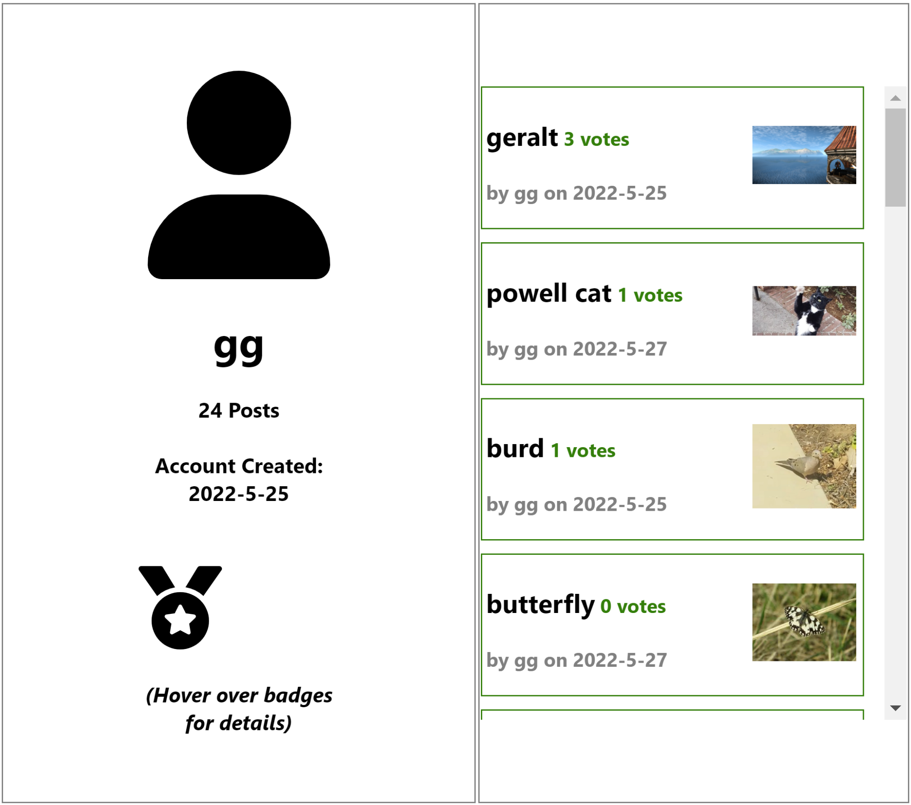
Contact Me
Please use the form below to get in touch.
Socials